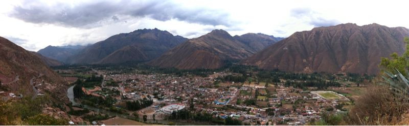

Sat, 02 Oct 2010 05:33:14 ·
view of el valle sagrado the sacred valley it

View of ‘El Valle Sagrado’ - the Sacred Valley. It encompasses the small part of the Rio Urubamba that stretches from Pisac to Ollantayambo (near Cusco), Peru.
Sat, 02 Oct 2010 05:33:14 ·

View of ‘El Valle Sagrado’ - the Sacred Valley. It encompasses the small part of the Rio Urubamba that stretches from Pisac to Ollantayambo (near Cusco), Peru.